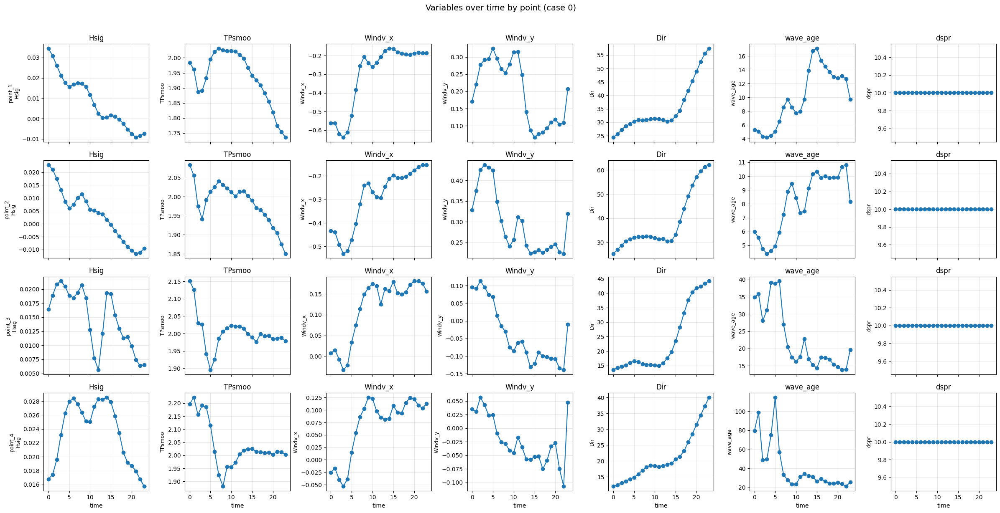
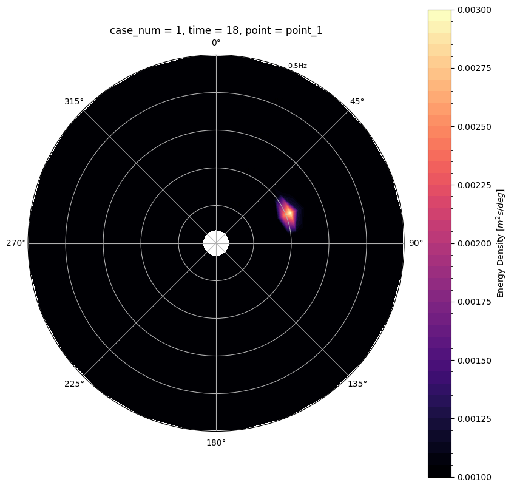

Cyclones MetaModel North Carolina#
import pandas as pd
import numpy as np
import matplotlib.pyplot as plt
import seaborn as sns
import xarray as xr
import cartopy.crs as ccrs
import sys
from pathlib import Path
PROJECT_ROOT = Path('.').resolve()
if str(PROJECT_ROOT) not in sys.path:
sys.path.insert(0, str(PROJECT_ROOT))
import sys
from pathlib import Path
PROJECT_ROOT = Path('.').resolve()
if str(PROJECT_ROOT) not in sys.path:
sys.path.insert(0, str(PROJECT_ROOT))
from paths import predicted_emu_tracks
cyclone_data = xr.open_dataset(predicted_emu_tracks('ssp585', mf=True))
cyclone_data
<xarray.Dataset> Size: 7MB
Dimensions: (case_num: 1785, time: 24, point: 4)
Coordinates:
* case_num (case_num) int64 14kB 0 1 2 3 4 ... 1781 1782 1783 1784
* time (time) int64 192B 0 1 2 3 4 5 6 ... 17 18 19 20 21 22 23
* point (point) <U7 112B 'point_1' 'point_2' 'point_3' 'point_4'
Data variables:
Hsig (case_num, time, point) float64 1MB ...
TPsmoo (case_num, time, point) float64 1MB ...
Windv_x (case_num, time, point) float64 1MB ...
Windv_y (case_num, time, point) float64 1MB ...
Dir (case_num, time, point) float64 1MB ...
original_storm_id (case_num) int64 14kB ...
time_emulation (case_num) <U10 71kB ...
sim_number (case_num) int64 14kB ...cyclone_data.original_storm_id.values
array([12984, 14668, 6826, ..., 2390, 3696, 16902], shape=(1785,))
# Hsig (Hs) statistics - useful to check if values seem realistic for cyclone waves
hs = cyclone_data['Hsig'].values
print('Hsig (significant wave height) statistics:')
print(f' Mean: {hs.mean():.4f} m')
print(f' Median: {np.median(hs):.4f} m')
print(f' Min: {hs.min():.4f} m')
print(f' Max: {hs.max():.4f} m')
print(f' Std: {hs.std():.4f} m')
print(f' Count: {hs.size} values')
# Identify case with maximum wave height (max over all time/point for each case)
hsig = cyclone_data['Hsig']
max_per_case = hsig.max(dim=['time', 'point'])
case_with_max = int(max_per_case.argmax())
max_hs = float(max_per_case.max())
case_dim = 'case_num' if 'case_num' in cyclone_data.dims else 'cyclone_id'
print(f'\nCase with maximum Hs: {case_dim} = {case_with_max} (Hs_max = {max_hs:.4f} m)')
Hsig (significant wave height) statistics:
Mean: 0.8562 m
Median: 0.2673 m
Min: -0.4839 m
Max: 13.3397 m
Std: 1.3670 m
Count: 171360 values
Case with maximum Hs: case_num = 448 (Hs_max = 13.3397 m)
# Plot variables over time for each of the 4 points, for one case
# CASE_ID = 12126 # change this to select a different case (0-4)
CASE_ID = 0
ds_one_case = cyclone_data.sel(case_num=CASE_ID)
# Compute wave direction (degrees) from Dir_x and Dir_y
# direction_rad = np.arctan2(ds_one_case['Dir_y'], ds_one_case['Dir_x'])
# ds_one_case = ds_one_case.assign(direction_deg=np.degrees(direction_rad))
# Compute wave age (cp/U10) and directional spreading from wave-age lookup table
# Wave Age (cp/U10) -> dspr: 0.6-0.8 (young)->40-60°, 0.8-1.0->30-40°, 1.0-1.2->20-30°, >1.2 (mature)->10-25°
g = 9.81
U10 = np.sqrt(ds_one_case['Windv_x']**2 + ds_one_case['Windv_y']**2)
cp = g * ds_one_case['TPsmoo'] / (2 * np.pi)
wave_age = cp / np.where(U10 > 0, U10, np.nan)
# Map wave age to dspr (degrees) using piecewise linear interpolation
def wave_age_to_dspr(wa):
"""Map wave age to directional spreading (degrees) using simplified storm-age relationship."""
return np.where(wa < 0.6, 55,
np.where(wa < 0.8, 50 - (wa - 0.6) * 50, # 50 -> 40
np.where(wa < 1.0, 40 - (wa - 0.8) * 50, # 40 -> 30
np.where(wa < 1.2, 30 - (wa - 1.0) * 50, # 30 -> 20
np.clip(25 - (wa - 1.2) * 37.5, 10, 25)))))
dspr = wave_age_to_dspr(wave_age.values)
ds_one_case = ds_one_case.assign(wave_age=wave_age)
ds_one_case = ds_one_case.assign(dspr=xr.DataArray(dspr, dims=wave_age.dims, coords=wave_age.coords))
variables = ['Hsig', 'TPsmoo', 'Windv_x', 'Windv_y', 'Dir', 'wave_age', 'dspr']
points = ds_one_case.coords['point'].values
fig, axes = plt.subplots(4, 7, figsize=(24, 12), sharex=True)
time_vals = ds_one_case.coords['time'].values
print(len(time_vals))
for i, pt in enumerate(points):
for j, var in enumerate(variables):
ax = axes[i, j]
vals = ds_one_case[var].sel(point=pt).values
ax.plot(time_vals, vals, 'o-', markersize=6)
ax.set_ylabel(var, fontsize=9)
ax.grid(True, alpha=0.3)
ax.set_title(var)
if i == 3:
ax.set_xlabel('time')
axes[i, 0].set_ylabel(f'{pt}\n{variables[0]}', fontsize=9)
plt.suptitle(f'Variables over time by point (case {CASE_ID})', fontsize=14, y=1.02)
plt.tight_layout()
plt.show()
24

Wave Spectrum Reconstruction#
kp1=xr.open_dataset('grid1/outputs/kp_coeffs_filtered_grid1.nc')
kp2=xr.open_dataset('grid2/outputs/kp_coeffs_filtered_grid2.nc')
kp3=xr.open_dataset('grid3/outputs/kp_coeffs_filtered_grid3.nc')
kp4=xr.open_dataset('grid4/outputs/kp_coeffs_filtered_grid4.nc')
# Reconstruct wave spectrum for each point and case (vectorized; ~seconds, not ~30 min)
import os
import sys
import time as time_mod
from wavespectra.construct import construct_partition
# Option: "all" for all cases, or a single case ID / list of IDs for testing
RECONSTRUCT_CASES = "all" # e.g. 0 for quick test, or np.arange(0, 10)
CASE_DIM = "case_num" if "case_num" in cyclone_data.dims else "cyclone_id"
def _log(msg):
print(msg, flush=True)
# Directional spreading from wave age
_log("Computing wave age / dspr ...")
t_all = time_mod.perf_counter()
g = 9.81
U10 = np.sqrt(cyclone_data["Windv_x"] ** 2 + cyclone_data["Windv_y"] ** 2)
cp = g * cyclone_data["TPsmoo"] / (2 * np.pi)
wave_age = cp / np.where(U10 > 0, U10, np.nan)
def wave_age_to_dspr(wa):
return np.where(
wa < 0.6, 55,
np.where(wa < 0.8, 50 - (wa - 0.6) * 50,
np.where(wa < 1.0, 40 - (wa - 0.8) * 50,
np.where(wa < 1.2, 30 - (wa - 1.0) * 50,
np.clip(25 - (wa - 1.2) * 37.5, 10, 25)))),
)
dspr_full = xr.DataArray(
wave_age_to_dspr(wave_age.values),
dims=wave_age.dims,
coords=wave_age.coords,
)
kp_by_point = {"point_1": kp1, "point_2": kp2, "point_3": kp3, "point_4": kp4}
points = list(kp_by_point.keys())
all_case_ids = np.asarray(cyclone_data.coords[CASE_DIM].values)
if isinstance(RECONSTRUCT_CASES, str) and RECONSTRUCT_CASES == "all":
case_ids = all_case_ids
else:
if isinstance(RECONSTRUCT_CASES, np.ndarray):
cases_in = RECONSTRUCT_CASES.tolist()
elif isinstance(RECONSTRUCT_CASES, (list, tuple, set)):
cases_in = list(RECONSTRUCT_CASES)
else:
cases_in = [RECONSTRUCT_CASES]
case_id_set = set(all_case_ids.tolist())
case_ids = np.asarray([c for c in cases_in if c in case_id_set])
if len(case_ids) == 0:
raise ValueError(f"RECONSTRUCT_CASES={RECONSTRUCT_CASES} yielded no valid case IDs")
data = cyclone_data.sel({CASE_DIM: case_ids})
dspr_sel = dspr_full.sel({CASE_DIM: case_ids})
n_cases = len(case_ids)
n_time = data.sizes["time"]
n_points = len(points)
_log(
f"Building spectra for {n_cases} cases × {n_time} times × {n_points} points "
f"along '{CASE_DIM}' (vectorized)"
)
os.makedirs("outputs/spectra", exist_ok=True)
for i_pt, pt_name in enumerate(points, start=1):
t_pt = time_mod.perf_counter()
_log(f"[{i_pt}/{n_points}] {pt_name}: preparing ...")
kp = kp_by_point[pt_name]
freq = kp.freq.values
dirs = kp.dir.values
grid_num = int(pt_name.split("_")[-1])
hs = data["Hsig"].sel(point=pt_name)
tp = data["TPsmoo"].sel(point=pt_name)
dm = data["Dir"].sel(point=pt_name)
dspr = dspr_sel.sel(point=pt_name)
valid = (hs > 0) & (tp > 0) & np.isfinite(dm) & np.isfinite(dspr)
fp = (1.0 / tp).where(valid)
hs_v = hs.where(valid)
dm_v = (dm % 360.0).where(valid)
dspr_v = dspr.where(valid)
n_valid = int(valid.sum())
n_total = int(valid.size)
t0 = time_mod.perf_counter()
_log(f"[{i_pt}/{n_points}] {pt_name}: constructing {n_valid}/{n_total} valid spectra ...")
spec = construct_partition(
freq_name="jonswap",
freq_kwargs={"freq": freq, "fp": fp, "hs": hs_v},
dir_name="cartwright",
dir_kwargs={"dir": dirs, "dm": dm_v, "dspr": dspr_v},
)
spec = spec.where(valid)
out = spec.rename("efth").to_dataset(name="efth")
t_construct = time_mod.perf_counter() - t0
t0 = time_mod.perf_counter()
out_path = f"outputs/spectra/spectra_{pt_name}.nc"
_log(f"[{i_pt}/{n_points}] {pt_name}: writing {out_path} ...")
out.to_netcdf(out_path)
grid_in = f"grid{grid_num}/inputs"
os.makedirs(grid_in, exist_ok=True)
grid_path = f"{grid_in}/spectra_point_{grid_num}.nc"
_log(f"[{i_pt}/{n_points}] {pt_name}: writing {grid_path} ...")
out.to_netcdf(grid_path)
t_write = time_mod.perf_counter() - t0
_log(
f"[{i_pt}/{n_points}] {pt_name}: done in {time_mod.perf_counter() - t_pt:.1f}s "
f"(construct {t_construct:.1f}s, write {t_write:.1f}s; "
f"{n_valid}/{n_total} valid)"
)
_log(f"All points finished in {time_mod.perf_counter() - t_all:.1f}s")
Computing wave age / dspr ...
Building spectra for 1785 cases × 24 times × 4 points along 'case_num' (vectorized)
[1/4] point_1: preparing ...
[1/4] point_1: constructing 39599/42840 valid spectra ...
[1/4] point_1: writing outputs/spectra/spectra_point_1.nc ...
[1/4] point_1: writing grid1/inputs/spectra_point_1.nc ...
[1/4] point_1: done in 3.7s (construct 0.4s, write 3.3s; 39599/42840 valid)
[2/4] point_2: preparing ...
[2/4] point_2: constructing 40048/42840 valid spectra ...
[2/4] point_2: writing outputs/spectra/spectra_point_2.nc ...
[2/4] point_2: writing grid2/inputs/spectra_point_2.nc ...
[2/4] point_2: done in 2.0s (construct 0.3s, write 1.7s; 40048/42840 valid)
[3/4] point_3: preparing ...
[3/4] point_3: constructing 40856/42840 valid spectra ...
[3/4] point_3: writing outputs/spectra/spectra_point_3.nc ...
[3/4] point_3: writing grid3/inputs/spectra_point_3.nc ...
[3/4] point_3: done in 4.4s (construct 0.3s, write 4.1s; 40856/42840 valid)
[4/4] point_4: preparing ...
[4/4] point_4: constructing 40492/42840 valid spectra ...
[4/4] point_4: writing outputs/spectra/spectra_point_4.nc ...
[4/4] point_4: writing grid4/inputs/spectra_point_4.nc ...
[4/4] point_4: done in 3.1s (construct 0.3s, write 2.9s; 40492/42840 valid)
All points finished in 13.3s
# Load spectra and ensure efth variable (wavespectra expects 'efth')
spectra1 = xr.open_dataset('outputs/spectra/spectra_point_1.nc')
if '__xarray_dataarray_variable__' in spectra1:
spectra1 = spectra1.rename({'__xarray_dataarray_variable__': 'efth'})
spectra1
<xarray.Dataset> Size: 239MB
Dimensions: (case_num: 1785, time: 24, freq: 29, dir: 24)
Coordinates:
* case_num (case_num) int64 14kB 0 1 2 3 4 5 ... 1780 1781 1782 1783 1784
* time (time) int64 192B 0 1 2 3 4 5 6 7 8 ... 15 16 17 18 19 20 21 22 23
* freq (freq) float64 232B 0.035 0.0385 0.0423 ... 0.4135 0.4547 0.5
* dir (dir) float64 192B 8.0 23.0 38.0 53.0 ... 308.0 323.0 338.0 353.0
point <U7 28B ...
Data variables:
efth (case_num, time, freq, dir) float64 239MB ...import wavespectra as ws
# Select one case and one timestep (works with case_num or cyclone_id)
case_dim = "case_num" if "case_num" in spectra1.dims else "cyclone_id"
spectra1.isel({case_dim: 1, "time": 18}).spec.plot(
kind="contourf",
cmap="magma",
normalised=False,
logradius=False,
rmin=0,
rmax=0.5,
show_theta_labels=True,
show_radii_labels=True,
figsize=(10, 10),
levels=50,
)
<matplotlib.contour.QuadContourSet at 0x7f68792eb690>
